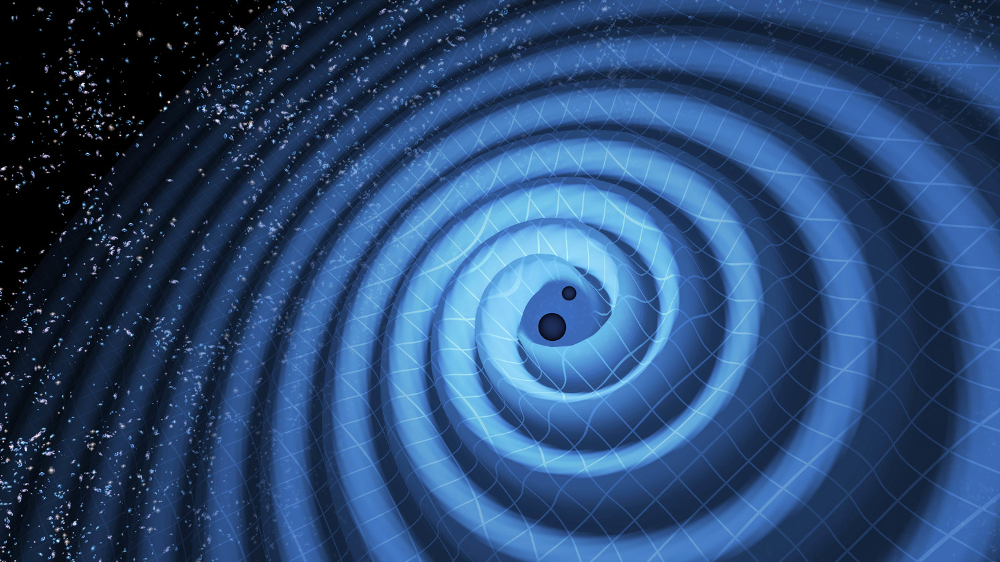

AstroSpace
AstroSpaceDetectan una colisión de agujeros negros de masas "imposibles" según la teoría actual
El evento registrado por observatorios de ondas gravitacionales desafía los límites conocidos sobre cómo evolucionan las estrellas masivas.

Fuente: LIGOLos detectores globales de ondas gravitacionales volvieron a sacudir al mundo de la física al registrar el eco de una colisión estelar sin precedentes. Los agujeros negros involucrados en la fusión poseían masas que, según los modelos evolutivos estelares aceptados, simplemente no deberían existir debido a los procesos de inestabilidad de pares.
Este vacío en la distribución de masas estelares ha desconcertado a los teóricos, quienes ahora evalúan si estos objetos se formaron a partir de fusiones sucesivas de agujeros negros más pequeños en cúmulos densos o si representan una población completamente nueva de origen primordial.
"Cada vez que escuchamos el tejido del espacio-tiempo distorsionarse con estas señales exóticas, descubrimos que el universo es mucho más creativo de lo que imaginábamos."
Los científicos confían en que las futuras generaciones de detectores más sensibles permitan esclarecer el misterio de estas masas anómalas.